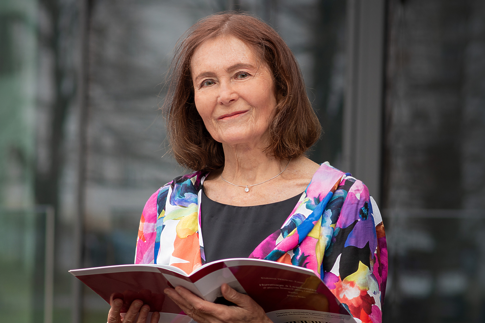

以下为公开口径的“快速核验信息”（以奥地利官方登记为准）：
- 奥地利 Firmenbuch 编号：
FN 653499 d - 登记法院：Handelsgericht Wien（维也纳商事法院）
- 法人形态：Privatstiftung（奥地利私营基金会）
- 注册地址：Schweidlgasse 30/2/56, 1020 Wien
- 对外代表：Two-Signature Rule（两名董事共同签署）
如需完整的 Firmenbuch Auszug / 合规说明文件，可邮件联系： office@viyaf.org。

Board · Stiftungsvorstand
（Stiftungsvorstand）董事会成员｜Prof. Mag. Elzbieta Wiedner‑Zajac
钢琴家 · 作曲家 · 教育家（维也纳）
旅居维也纳的钢琴家、作曲家与教育家。曾在维也纳国立音乐与表演艺术大学（mdw）长期任教， 并取得教授资格（Habilitation）。其艺术活动与学术影响遍及国际舞台，多次在维也纳音乐协会金色大厅等重要场馆演出； 录音与出版作品获得专业领域高度评价。她同时长期参与多家国际音乐与学术机构，并获奥地利共和国 “科学与艺术荣誉十字”以及波兰共和国重要文化与国家勋章等荣誉。
- 维也纳学术背书：mdw（维也纳国立音乐与表演艺术大学）长期教学与大师班体系
- 殿堂级舞台经验：维也纳音乐协会金色大厅等重要舞台
- 国家级荣誉：奥地利“科学与艺术荣誉十字”等
注：以上为公开版简介摘要；VIYAF 对外治理与法律代表权限以 Firmenbuch 公示登记为准。
Photo © Julia Ostroverkhova